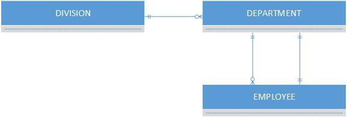
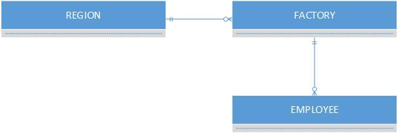
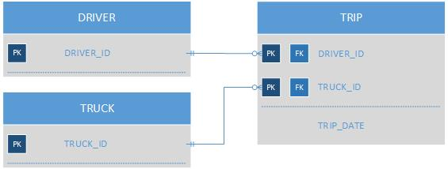
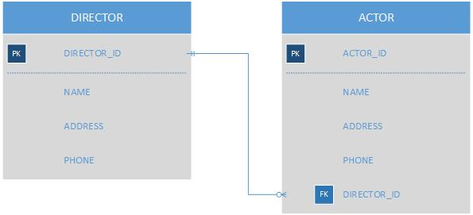
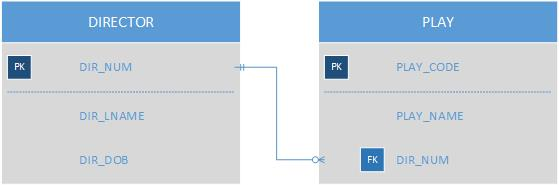
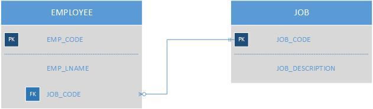
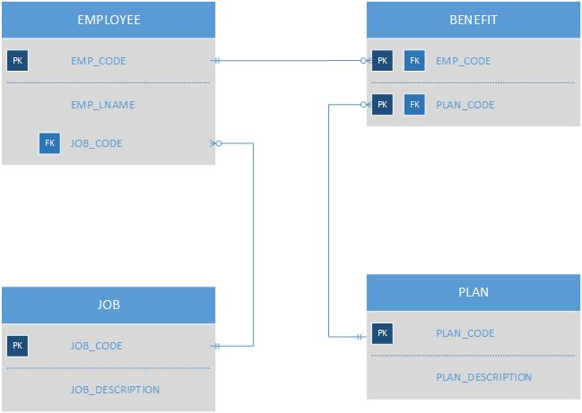
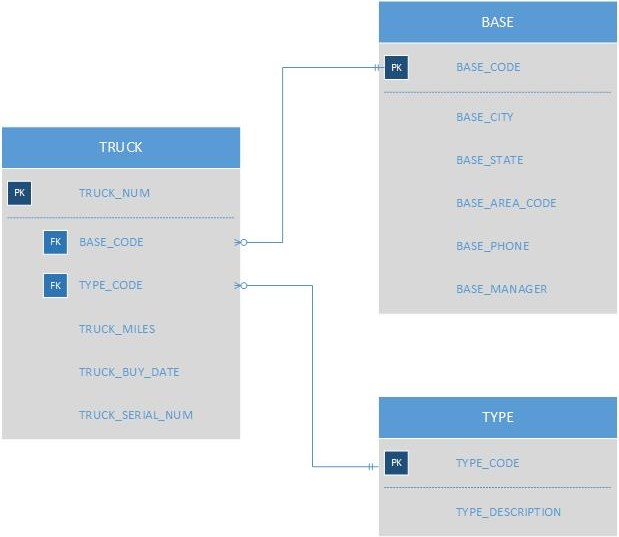
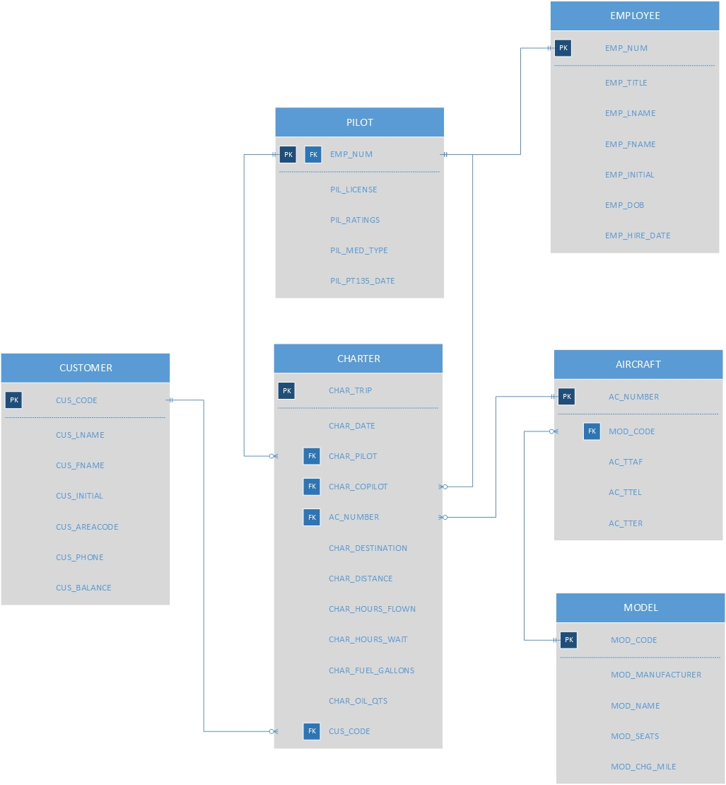

Review Questions
- A database is an electronic collection of data that’s organized and stored in a specific structure. E.g. a database used to keep track of all the company’s inventory
-
- Data: consists of unprocessed facts that have no meaning to the end user.
- Field: a character or attribute with specific meaning used to define and store data.
- Record: a set of one or more fields, representing one connected piece of data.
- File: a collection of related records.
- A database management system (DBMS) is a program or collection of programs used for managing databases and enabling the end user to access and manipulate data stored in those databases.
- Database design is an important step to define the structure of the database, which determines how accurately and meaningfully the data is reflected. Poorly-designed databases may cause errors that ultimately affect the decisions made for the business.
- Data is just raw facts with no meaning to the end user. Information is data that has been processed to reveal meaning based on specific context. Database is the collection of organized (processed) data.
Problems
- The table contains 7 records and there are 5 fields per record.
-
- The city name is nested within a much larger block of data, creating more work just to parse out the data you want.
- Break the MANAGER_ADDRESS into separate columns (ie. one for street address, city, state, zip code.
-
- PROJECT_MANAGER column would need to be separated into a first and last name column.
- MANAGER_PHONE would need to be separated into a column for the first 3 digits and one for the last 6 digits.
- MANAGER_ADDRESS would need to be broken down into street address, city, state, and zip code.
- There are PROJECT_MANAGERs being assigned to more than one PROJECT_CODE, resulting in a duplication of data. This can lead to possible anomalies of having different versions of the same data when not all of the targeted data is uploaded, inserted, or deleted.
- Every column in the table structure, except PROJ_HOURS, contains duplicated data. There is an EMP_NUM that has different EMP_PHONE numbers at 2 different records and some that have different JOB_CHG_HOUR but the same JOB_CODE.
- EMP_NAME should be separated into first name, last name, and initial. EMP_PHONE should be separated into area code and the phone number. This will allow greater organization and manipulation of the data, as it would not have to be parsed from a string.
- There are redundancies in the TEACHER_LNAME, TEACHER_FNAME, and TEACHER_INITIAL columns. If you wanted to change any of these entries you would have to ensure you select all existing entries. It would be better for all the teachers’ information to be in a separate table and only referenced by ID to this table.
- If all entries of BUILDING_CODE “KOM” were deleted, the relationships between them and DAYS_TIME and ROOM_CODE entries would be gone. Data would no longer be standard amongst the records due to the deletion, possibly leading to more anomalies in the future.
-
A professor can teach many classes. A class can only be taught by one professor.
A professor can advise many students. A student can only be advised by one professor. -
-
An employee can write many invoices. An invoice can only be written by one employee.
A customer can pay many invoices. An invoice can only be paid by one customer. -
-
 -
-
-

-
Review Questions
-
A database presents data in a logical way, creating relationships between entities.
A table is simply a structure composed of rows and columns that hold groups of related records and fields. - Entity integrity refers to an entity that has a unique primary key that can be used to access records. Referential integrity refers to relationships between entities that use foreign keys that match their parent primary keys, ensuring that the correct data is delivered between those entities.
- Entity integrity is important as it prevents false determination of records within a single entity. Referential integrity is important as databases make it impossible to delete entries in a table that is linked to a foreign key in another entity.
-
-
 -
Implement a foreign key into the table which will have many, linking to the primary key of the table with the one relationship. E.g. one director can have many actors working under him
 -
Entity: EMPLOYEE
Attribute: EMP_NUM, EMP_LNAME, EMP_INITIAL, EMP_FNAME, DEPT_CODE, JOB_CODE
Primary Key: EMP_NUM
Foreign Keys: DEPT_CODE and JOB_CODE -
TABLE PRIMARY KEY FOREIGN KEY(S) DIRECTOR DIR_NUM NONE PLAY PLAY_CODE DIR_NUM

Problems
-
TABLE PRIMARY KEY FOREIGN KEY(S) EMPLOYEE EMP_CODE JOB_CODE BENEFIT EMP_CODE, PLAN_CODE EMP_CODE, PLAN_CODE JOB JOB_CODE NONE PLAN PLAN_CODE NONE -
 -
TABLE ENTITY INTEGRITY EXPLANATION EMPLOYEE Yes The primary key (EMP_CODE) uniquely identifies the records BENEFIT Yes The primary key (EMP_CODE, PLAN_CODE) uniquely identifies the records JOB Yes The primary key (JOB_CODE) uniquely identifies the records PLAN Yes The primary key (PLAN_CODE) uniquely identifies the records -
TABLE REFERENTIAL INTEGRITY EXPLANATION EMPLOYEE Yes All foreign key matches its value in the parent table BENEFIT Yes All foreign key matches its value in the parent table JOB NA NA PLAN NA NA -
 -
TABLE PRIMARY KEY FOREIGN KEY(S) PRODUCT PROD_CODE VEND_CODE VENDOR VEND_CODE NONE -
TABLE ENTITY INTEGRITY EXPLANATION PRODUCT Yes The primary key (PROD_CODE) uniquely identifies the records VENDOR Yes The primary key (VEND_CODE) uniquely identifies the records -
TABLE REFERENTIAL INTEGRITY EXPLANATION PRODUCT Yes All foreign key matches its value in the parent table VENDOR NA NA -
TABLE PRIMARY KEY FOREIGN KEY(S) TRUCK TRUCK_NUM BASE_CODE, TYPE_CODE BASE BASE_CODE NONE TYPE TYPE_CODE NONE -
TABLE ENTITY INTEGRITY EXPLANATION TRUCK Yes The primary key (TRUCK_NUM) uniquely identifies the records BASE Yes The primary key (BASE_CODE) uniquely identifies the records TYPE Yes The primary key (TYPE_CODE) uniquely identifies the records -
TABLE REFERENTIAL INTEGRITY EXPLANATION TRUCK Yes All foreign key is either null or matches its value in the parent table BASE NA NA TYPE NA NA - The TRUCK table’s candidate key is TRUCK_NUM.
-
 -
TABLE PRIMARY KEY FOREIGN KEY(S) CHARTER CHAR_TRIP CHAR_PILOT, CHAR_COPILOT, AC_NUMBER, CUS_CODE AIRCRAFT AC_NUMBER MOD_CODE MODEL MOD_CODE NONE PILOT EMP_NUM NONE EMPLOYEE EMP_NUM NONE CUSTOMER CUS_CODE NONE -
